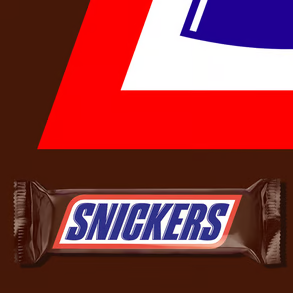
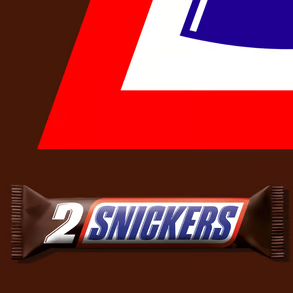
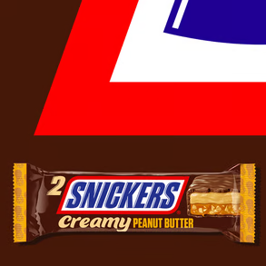

-
Onze Producten
- Alles weergeven
- Creamy
- Ijs
- Recepten
- Ons Verhaal
Trek?
Je bent jezelf niet als je trek hebt.
Snickers Creamy. De vertrouwde smaak van Snickers, nu met een dikke laag smeuige pindakaas!
Onze favorieten
- 
Snickers
OriginalKies Mij.
- 
Snickers
DuoKies Mij.
- 
Snickers
CreamyKies Mij.
Tijd om te chillen.
Snickers Ice Cream
Net toen je dacht dat Snickers niet cooler kon.
Meer bekijken